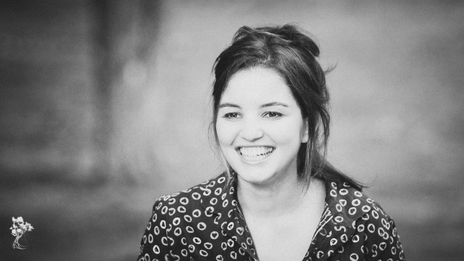

Como escolher a sua lente
As lentes, também conhecidas como objetivas, são a parte mais importante do seu equipamento. Durante a sua vida você talvez precisará trocar de câmera de vez em quando, comprar novos cartões de memória ou atualizar seu Photoshop. Já as lentes podem durar a vida inteira.
Mas como selecionar as lentes de acordo com o que você precisa?
Lentes de qualidade vs preço
A qualidade da lente está nos materiais utilizados na sua montagem (vidro, corpo e até a cola que junta cada pedacinho) e pode ser percebida na qualidade final da imagem. Quanto melhor a lente mais nítida, com cores mais reais e com menos aberrações ficarão as fotos feitas com ela.
As lentes que são feitas com os melhores materiais e com o melhor controle de qualidade são, naturalmente, sempre mais caras. Várias vezes boas lentes vão custar mais caro que a sua câmera! Mas mesmo as lentes que não são top de linha podem durar a vida toda se forem bem cuidadas.
Uma coisa é fato: a fabricação de lentes de qualidade é um processo quase artesanal e isso é o que justifica o preço. Mas dá pra economizar: o melhor custo/benefício na hora de comprar uma lente boa é procurando por usadas.
Distância focal
A distância focal é o primeiro item a decidir na hora de comprar sua lente.
As lentes podem ter somente uma distância focal (lentes fixas) ou podem permitir o uso de várias distâncias focais girando um anel (lentes zoom.)
A distância focal aparece em mm na descrição das lentes. Por exemplo:
- Canon EF 50mm f/1.8 II Autofocus Lens – essa lente tem distância focal de 50mm. É uma lente fixa.
- Canon EF-S 17-85mm f/4-5.6 IS USM Autofocus Lens – essa lente tem dois valores de distância focal. É uma lente zoom e vai de 17mm até 85mm (inclusive 18, 19, …, 84)
As distâncias focais são divididas em alguns grupos principais, que são mais ou menos esses:
Grande-angulares (até 50mm)
- Com elas você consegue registrar um ângulo bem grande de visão.
- Boas para: paisagens, arquitetura/ambientes apertados, fotos de grupos.
- Características: faz os objetos da foto parecerem mais distantes uns dos outros e costumam distorcer as bordas.
Normais (ali por volta de 50mm)

- Com elas o ângulo de visão é mais ou menos como o do olho humano. Essa é a distância focal da maioria das lentes de celular e compactas.
- Boas para: um pouco de tudo (não são especializadas, logo são bem versáteis.)
- Características: o resultado é muito parecido com o que vemos com o olho.
Teleobjetivas (50mm até 200mm)
- Com elas você consegue fotografar um assunto que está mais longe.
- Boas para: retratos e closes em assuntos distantes.
- Características: faz os objetos da foto parecerem mais próximos uns dos outros além de possuir uma menor profundidade de campo.
Super-teleobjetivas (200mm ou mais)
- Com elas você consegue fotografar um assunto que está muito, mas muito, longe (lentes usadas para fotografar leões na África, por exemplo.)
- Boas para: fotografar celebridades, astronomia, animais hostis.
- Características: faz os objetos da foto parecerem bem mais próximos uns dos outros do que a realidade e necessitam do uso de tripé.
Abertura de diafragma
Depois de decidir a distância focal vamos para a abertura do diafragma.
Não sabe o que é abertura? Leia na apostila “Aprenda a fotografar em 7 lições”
A abertura irá aparecer ao lado da letra f (a “medida” da abertura.) Ao comprar você provavelmente verá um só valor no nome da câmera. Esse será o valor máximo de abertura daquela lente:
- Canon EF 50mm f/1.8 II Autofocus Lens – essa lente possui abertura máxima de 1.8.
- Canon EF-S 17-85mm f/4-5.6 IS USM Autofocus Lens – algumas lentes zoom apresentam dois valores de abertura. Isso quer dizer que na menor distância focal (17mm) essa lente tem abertura 4 e na maior distância focal (85mm) essa lente tem abertura de 5.6.
O valor que está escondido é provavelmente f/22 ou f/29, que é normalmente a menor abertura de todas as lentes. Isso quer dizer que qualquer lente pode fechar o diafragma bastante.
Existem lentes mais claras e mais escuras. Não existem valores fixos pois a claridade da lente depende da comparação com outras lentes de mesma distância focal, mas normalmente é assim:
Lentes claras (também chamadas de lentes mais rápidas)
- Normalmente possuem abertura máxima entre f/1.4 e f/2.8
- Boas para: pouca iluminação (entra bastante luz) e retratos (faz desfoques.)
- Nas super teleobjetivas uma abertura de f/4 já é considerada bem clara.
Lentes escuras
- Normalmente acima de f/5.6
-Boas para: larga profundidade de campo e quando você não precisa fotografar em situações críticas de luz
-Observação: ninguém gosta de lentes escuras, afinal qualquer lente pode ficar escura só fechando o diafragma, o que faz das lentes claras mais versáteis.
Lentes mais específicas
- Macro
Você pode fazer fotos bem de pertinho. As lentes Macro são usadas para fotografar insetos e outros objetos e detalhes bem pequenos. Ao comprar a lente procure pela palavra “Macro” na sua descrição e também pelo mínimo de distância de foco (minimum focusing distance) e ampliação (magnification.)
- Fisheye
Essas lentes são grande angulares que fazem ainda mais distorção nas fotos, resultando em uma aparência circular.
Essas são algumas das principais características de lentes fotográficas e são um bom começo para você escolher a sua! As várias opções, siglas e números parecem assustadores no início, mas a gente se acostuma rapidinho a entender o que cada coisa quer dizer.